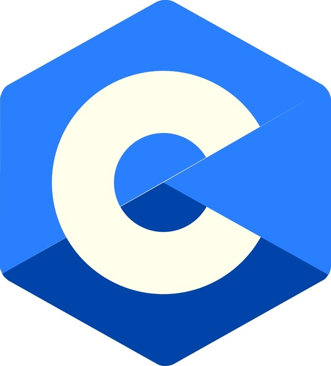
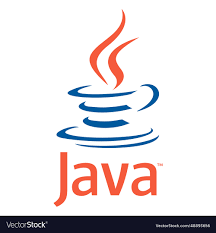
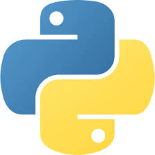

My favorite programming languages
This website is dedicated to my favorite programming languages. I am justing using them as a way to learn web dev.

Here are the top 4

A powerful general-purpose programming language known for its efficiency and control over system resources

An object-oriented programming language designed to be platform-independent, running on the Java Virtual Machine (JVM).

An interpreted, high-level programming language known for its readability and simplicity.

A high-level, interpreted scripting language primarily used for web development.
I have the ability to arrange 1's and 0's in such an order that an x86 processor can actually interpret and execute those commands. It's called Computer Programming, but it's the closest that a man can ever get to giving birth in my opinion. And I somehow feel responsible for the future existence and acceptance of my "child". I'd spend hours trying to find the tiny bug that causes my child to misbehave or act strangely. But that's my mild superpower... I make the world a better place by writing mindless back-end programs that no-one will ever see nor even know that it's there. But I know; and that's all that matters.— Alucard
Build something with them now!
Sign up and lets learn together